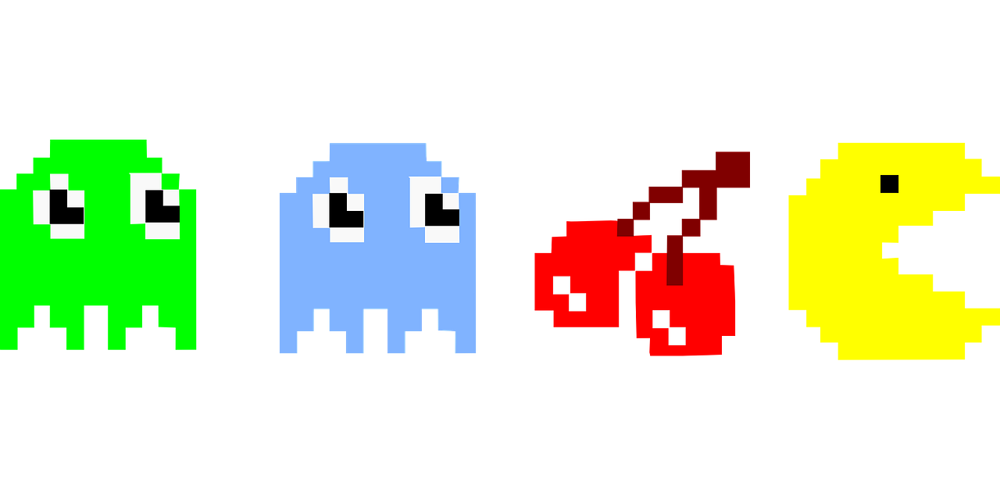
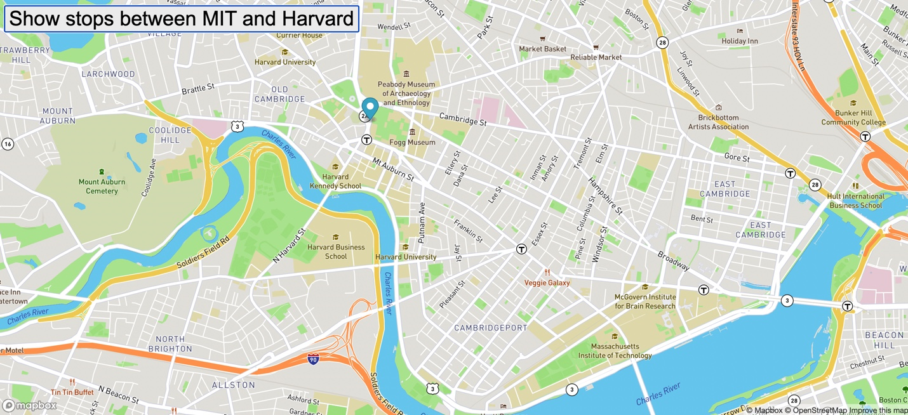

Project page
A sample of projects made during my time at MIT xPro full stack software development boot camp.

Pacmen factory
Create Pacmen with the click of a button and watch as they move around the screen at their own pace using collision detection and random position and velocity.
Pacmen repo Demo
Eye movement
Watch as a pair of eyes follows your mouse around the screen using a dynamic combination of JavaScript, HTML and CSS.
Moving eyes repo Demo

Bus tracker
A bus tracker that runs from the MIT to Harvard campus using bus stop data to determine the stops. An animated marker is added to the map to highlight the bus route.
Bus tracker repo Demo